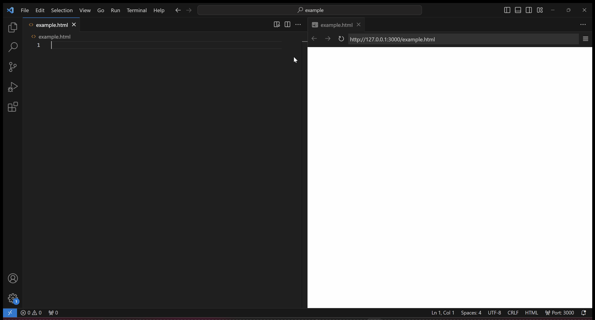

SIMPLE SEMANTIC CSS
Simple Semantic CSS is a lightweight, from-scratch CSS framework designed to empower web developers with semantic HTML5 integrations, dark and light mode support, and responsive design capabilities.
Features
- Semantic HTML5 Integration: Enhances semantic HTML tags with informative styles.
- Dark and Light Mode: Natively supports dark and light themes using `@media (prefers-color-scheme: dark/light)`.
- Flexbox Utilities: Offers utility classes for Flexbox, such as `.d-flex {display: flex;}`.
- CSS Reboot: Applies a default style for most HTML elements based on a dark theme.
- Layered Architecture: Utilizes `@layer` to organize and prioritize CSS rules.
- Responsive Design: Makes it easy to build responsive websites with minimal effort.
Integration
To use Simple Semantic CSS in your project, you can load the stylesheets directly from GitHub via CDN.
CDN Link
https://cdn.jsdelivr.net/gh/alternative-rvb/simple-semantic-css/css/v{version}/main.css
To activate information styles for semantic HTML tags, add
class="info" to your <body> tag.
Assets
Simple Semantic CSS incorporates the following resources:
- Google Fonts: Uses Nunito font family from Google Fonts CDN.
- Bootstrap Icons: Integrates Bootstrap Icons for enriched graphical elements.